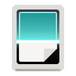

--:--
AlmaLinux
À propos
Rechercher une application
alma
Fedora Me...
Contacts
Météo
Horloges
Cartes
LibreOffice Calc

Numérise...
Paramètres
Machines
Lecteur vi...
Caméra
Caractères
Utilitaires
Système
LibreOffic...
Visite guid...
Aide
LibreOffic...
Terminal
Aucune notification
‹
›
Aujourd'hui
Aucun évènement
Ajouter des horloges mondiales…
Choisir un emplacement pour la météo…
100%
Filaire
Mode puis…
Équilibré
Style sombre
Ne pas déranger